pacman::p_load(sf, sfdep, tmap, tidyverse)Hands-on Exercse 5a
10. Local Measures of Spatial Autocorrelation
10.1 Overview
What are LMSA?
Local Measures of Spatial Autocorrelation (LMSA):
Focus on individual observations and their surroundings, not just one global summary.
Provide scores per location, helping us understand spatial structure in more detail.
Some LMSA measures are mathematically linked to global ones (e.g., global Moran’s I can be decomposed into local LISAs).
Examples of LMSA:
LISA (Local Indicators of Spatial Association): Detect clusters (e.g., high-high, low-low) and outliers (e.g., high-low, low-high).
Getis-Ord’s Gi-statistics: Detect hot spots (high values) and cold spots (low values).
Learning objectives in this exercise:
By the end, you will be able to:
Import geospatial data (
sfpackage).Import CSV data (
readrpackage).Perform relational joins (
dplyrpackage).Compute LISA statistics using
sfdep.Compute Getis-Ord Gi-statistics using
sfdep.Visualize results using
tmap.
10.2 Getting Started
10.2.1 The analytical question
Policy context:
Local governments and planners aim to achieve an equal distribution of development across the province.Step-by-step research questions:
Q1: Are development levels evenly distributed geographically?
If NO → Q2: Is there evidence of spatial clustering?
If YES → Q3: Where exactly are these clusters located?
Case study focus:
- Investigating the spatial pattern of GDP per capita in Hunan Province, People’s Republic of China.
10.2.2 The Study Area and Data
Two data sets will be used in this hands-on exercise, they are:
Hunan province administrative boundary layer at county level. This is a geospatial data set in ESRI shapefile format.
Hunan_2012.csv: This csv file contains selected Hunan’s local development indicators in 2012.
10.2.3 Setting the Analytical Toolls
Before starting the analysis, several R packages need to be installed and loaded:
sf → Importing and handling geospatial data.
tidyverse → Wrangling and managing attribute (tabular) data.
sfdep → Computing spatial weights, global and local spatial autocorrelation statistics.
tmap → Creating cartographic-quality choropleth maps for visualization.
Workflow in code chunk:
Create a list of required packages.
Check whether each package is installed.
If not installed → automatically install it.
Load all packages into the R environment.
10.3 Getting the Data Into R Environment
In this section, you will learn how to bring a geospatial data and its associated attribute table into R environment. The geospatial data is in ESRI shapefile format and the attribute table is in csv fomat.
10.3.1 Import shapefile into r environment
The code chunk below uses st_read() of sf package to import Hunan shapefile into R. The imported shapefile will be simple features Object of sf.
hunan <- st_read(dsn = "data/geospatial",
layer = "Hunan") %>%
st_transform(crs = 32650)Reading layer `Hunan' from data source
`/Users/jay/Desktop/rapu34/ISSS626-GAA/Hands-on_Ex/Hands-on_Ex05a/data/geospatial'
using driver `ESRI Shapefile'
Simple feature collection with 88 features and 7 fields
Geometry type: POLYGON
Dimension: XY
Bounding box: xmin: 108.7831 ymin: 24.6342 xmax: 114.2544 ymax: 30.12812
Geodetic CRS: WGS 84
Tip
The raw data is in WGS 84 geographic coordinates system. For geospatial analysis, it is appropriate to use projected coordinates system. In the code chunk above, st_transform() is used to transform Hunan geospatial data from WGS 84 to UTM zone 50N (i.e. EPSG: 32650).
10.3.2 Import csv file into r environment
Next, we will import Hunan_2012.csv into R by using read_csv() of readr package. The output is R data frame class.
hunan2012 <- read_csv("data/aspatial/Hunan_2012.csv")10.3.3 Performing relational join
The code chunk below will be used to update the attribute table of hunan’s sf data frame with the attribute fields of hunan2012 dataframe. This is performed by using left_join() of dplyr package.
hunan <- left_join(hunan,hunan2012) %>%
select(1:4, 7, 15)10.3.4 Visualising Regional Development Indicator
In the code chunks below, tmap functions are used:
to build two choropleth maps by using equal interval (i.e equal) and quantile (i.e. quantile) classification methods, and
to plot both maps next to each other by using
tmap_arrange().
equal <- tm_shape(hunan) +
tm_polygons(fill = "GDPPC",
fill.scale = tm_scale_intervals(
style = "equal",
n = 5,
values = "brewer.blues"),
fill.legend = tm_legend(
title = "GDPPC",
position = tm_pos_in(
"left", "bottom"))) +
tm_borders(fill_alpha = 0.5) +
tm_title("Equal interval classification")
quantile <- tm_shape(hunan) +
tm_polygons(fill = "GDPPC",
fill.scale = tm_scale_intervals(
style = "quantile",
n = 5,
values = "brewer.blues"),
fill.legend = tm_legend(
title = "GDPPC",
position = tm_pos_in(
"left", "bottom"))) +
tm_borders(fill_alpha = 0.5) +
tm_title("Quantile interval classification")
tmap_arrange(equal,
quantile,
asp=1,
ncol=2)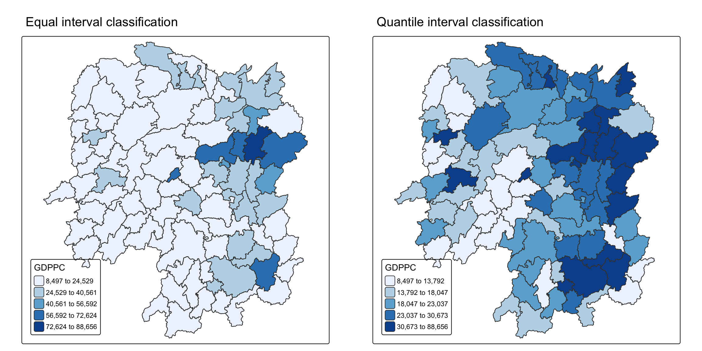
- Important
Does the plot above reveal any outliers or clusters?
Does the plot above indicate the presence of hot spots or cold spots?
Answer
The equal interval map suggests the presence of a few outliers (counties with very high GDPPC).
The quantile map reveals clearer spatial clusters: high GDPPC counties form hot spots in the east and south, while low GDPPC counties form cold spots in the central and western parts.
10.4 Local Indicators of Spatial Association(LISA)
Definition:
LISA statistics test whether there are local clusters (groups of similar values) or outliers (areas that differ sharply from their neighbors).
Example: For GDP per capita in Hunan Province, local clusters mean that some counties consistently show higher or lower GDPPC than expected under randomness.
Purpose:
Detect clusters (e.g., high-high, low-low).
Detect outliers (e.g., high-low, low-high).
Provide local-level insight that complements global measures (like Moran’s I).
In this section:
- Learn how to compute Local Moran’s I (LISA) to identify clusters and outliers in Hunan’s GDP per capita (2012).
10.4.1 Computing Contiguity Spatial Weights
Purpose:
Before computing local spatial autocorrelation (like Local Moran’s I), we must first define spatial weights.
Spatial weights capture neighbourhood relationships between geographic units (e.g., counties).
Functions used:
st_contiguity()Builds a neighbour list based on shared boundaries between polygons.
queen = TRUE/FALSEoption:TRUE(default): Queen contiguity → neighbours share either a border or a corner.FALSE: Rook contiguity → neighbours share only a border.
st_weights()Converts the neighbour list into spatial weights.
Arguments:
nb: neighbour list created byst_neighbors().style: defines the weighting scheme:W = row-standardised (default).
B = binary coding.
C = globally standardised.
U = scaled by number of neighbours.
S = variance-stabilising scheme.
allow_zero: ifTRUE, assigns zero as lagged value to polygons with no neighbours.
wm_q <- hunan %>%
mutate(nb = st_contiguity(geometry),
wt = st_weights(
nb, style = "W"),
.before = 1)
Tip
In the code chunk above, mutate() is used to write the computed nb and wt values back into hunan sf data table.
To reveal the neighbour list, code chunk below is used.
summary(wm_q$nb)Neighbour list object:
Number of regions: 88
Number of nonzero links: 448
Percentage nonzero weights: 5.785124
Average number of links: 5.090909
Link number distribution:
1 2 3 4 5 6 7 8 9 11
2 2 12 16 24 14 11 4 2 1
2 least connected regions:
30 65 with 1 link
1 most connected region:
85 with 11 linksThe summary report above shows that there are 88 area units in Hunan. The most connected area unit has 11 neighbours. There are two area units with only one neighbour.
10.4.2 Row-standardised weights matrix
Purpose:
After defining neighbours, we need to assign weights to each neighbouring polygon.Row-standardisation (style = “W”)
Each neighbour gets an equal weight = 1 / (number of neighbours).
The lagged value for a polygon is the sum of its neighbours’ values, weighted equally.
Drawback:
Edge polygons (those with fewer neighbours) may produce biased lagged values.
This can lead to over- or under-estimation of spatial autocorrelation.
Alternative styles:
B = binary coding (simpler, counts neighbours equally without dividing).
Other options exist, but in this case, we use W for simplicity.
Tip
The input of
nb2listw()must be an object of class nb. The syntax of the function has two major arguments, namely style and zero.poly.style can take values “W”, “B”, “C”, “U”, “minmax” and “S”. B is the basic binary coding, W is row standardised (sums over all links to n), C is globally standardised (sums over all links to n), U is equal to C divided by the number of neighbours (sums over all links to unity), while S is the variance-stabilizing coding scheme proposed by Tiefelsdorf et al. 1999, p. 167-168 (sums over all links to n).
If zero policy is set to TRUE, weights vectors of zero length are inserted for regions without neighbour in the neighbours list. These will in turn generate lag values of zero, equivalent to the sum of products of the zero row t(rep(0, length=length(neighbours))) %*% x, for arbitrary numerical vector x of length length(neighbours). The spatially lagged value of x for the zero-neighbour region will then be zero, which may (or may not) be a sensible choice.
10.4.3 Computing local Moran’s I
To compute local Moran’s I, the local_moran() function of sfdep will be used. It computes Ii values, given a set of zi values and a listw object providing neighbour weighting information for the polygon associated with the zi values.
The code chunks below are used to compute local Moran’s I of GDPPC2012 at the county level.
lisa <- wm_q %>%
mutate(local_moran = local_moran(
GDPPC, nb, wt, nsim = 99),
.before = 1) %>%
unnest(local_moran)local_moran() function returns a matrix of values whose columns are:
Ii: the local Moran’s I statistics
E.Ii: the expectation of local moran statistic under the randomisation hypothesis
Var.Ii: the variance of local moran statistic under the randomisation hypothesis
Z.Ii:the standard deviate of local moran statistic
Pr(): the p-value of local moran statistic
glimpse(lisa)Rows: 88
Columns: 21
$ ii <dbl> -1.468468e-03, 2.587817e-02, -1.198765e-02, 1.022468e-03,…
$ eii <dbl> -2.131759e-03, 5.691102e-03, 3.978203e-02, 5.749813e-05, …
$ var_ii <dbl> 6.654803e-04, 7.253737e-03, 1.309926e-01, 5.229442e-06, 1…
$ z_ii <dbl> 0.02571204, 0.23702405, -0.14303823, 0.42197426, 0.315105…
$ p_ii <dbl> 0.979487020, 0.812638129, 0.886259988, 0.673043803, 0.752…
$ p_ii_sim <dbl> 0.90, 1.00, 0.94, 0.62, 0.66, 0.84, 0.04, 0.12, 0.06, 0.1…
$ p_folded_sim <dbl> 0.45, 0.50, 0.47, 0.31, 0.33, 0.42, 0.02, 0.06, 0.03, 0.0…
$ skewness <dbl> -0.8683505, -0.6199898, 0.6119712, 0.7913015, 1.5228567, …
$ kurtosis <dbl> 0.70476284, -0.64664434, -0.53508550, -0.19335732, 3.5651…
$ mean <fct> Low-High, Low-Low, High-Low, High-High, High-High, High-L…
$ median <fct> High-High, High-High, High-High, High-High, High-High, Hi…
$ pysal <fct> Low-High, Low-Low, High-Low, High-High, High-High, High-L…
$ nb <nb> <2, 3, 4, 57, 85>, <1, 57, 58, 78, 85>, <1, 4, 5, 85>, <1,…
$ wt <list> <0.2, 0.2, 0.2, 0.2, 0.2>, <0.2, 0.2, 0.2, 0.2, 0.2>, <0…
$ NAME_2 <chr> "Changde", "Changde", "Changde", "Changde", "Changde", "C…
$ ID_3 <int> 21098, 21100, 21101, 21102, 21103, 21104, 21109, 21110, 2…
$ NAME_3 <chr> "Anxiang", "Hanshou", "Jinshi", "Li", "Linli", "Shimen", …
$ ENGTYPE_3 <chr> "County", "County", "County City", "County", "County", "C…
$ County <chr> "Anxiang", "Hanshou", "Jinshi", "Li", "Linli", "Shimen", …
$ GDPPC <dbl> 23667, 20981, 34592, 24473, 25554, 27137, 63118, 62202, 7…
$ geometry <POLYGON [m]> POLYGON ((22320.48 3301894,..., POLYGON ((35522.9…10.4.3.1 Mapping the local Moran’s I
10.4.3.2 Mapping local Moran’s I values
Using choropleth mapping functions of tmap package, we can plot the local Moran’s I values by using the code chinks below.
tm_shape(lisa) +
tm_polygons(fill = "ii",
fill.scale = tm_scale_intervals(
style = "pretty",
n = 5,
values = "brewer.RdBu"),
fill.legend = tm_legend(
title = "Local Morans'I",
position = tm_pos_out())) +
tm_borders(fill_alpha = 0.5) +
tm_title("Loal Morans'I of GDPPC (Queen's method)")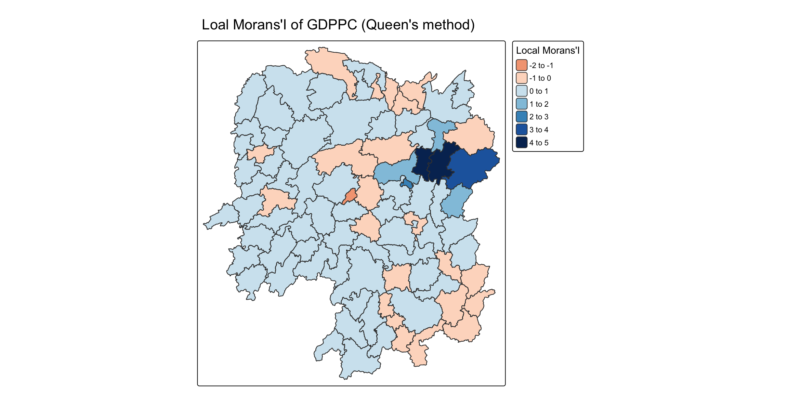
10.4.3.3 Mapping local Moran’s I p-values
The choropleth shows there is evidence for both positive and negative Ii values. However, it is useful to consider the p-values for each of these values, as consider above.
The code chunks below produce a choropleth map of Moran’s I p-values by using functions of tmappackage.
tm_shape(lisa) +
tm_polygons(fill = "p_ii",
fill.scale = tm_scale_intervals(
breaks = c(-Inf, 0.001, 0.01, 0.05, 0.1, Inf),
values = "-brewer.Reds"),
fill.legend = tm_legend(
title = "p-value",
position = tm_pos_out())) +
tm_borders(fill_alpha = 0.5) +
tm_title("p-values of Loal Moran's I of GDPPC (Queen's method)")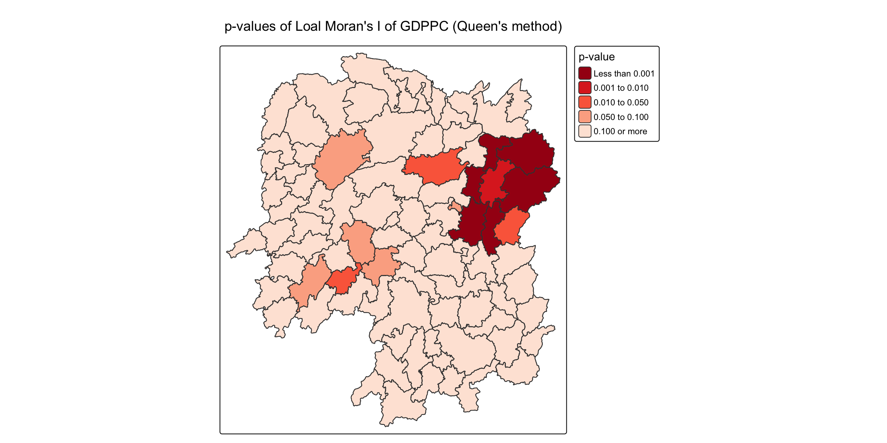
10.4.3.4 Mapping both local Moran’s I values and p-values
For effective interpretation, it is better to plot both the local Moran’s I values map and its corresponding p-values map next to each other.
The code chunk below will be used to create such visualisation.
ii.map <- tm_shape(lisa) +
tm_polygons(fill = "ii",
fill.scale = tm_scale_intervals(
style = "pretty",
n = 5,
values = "brewer.RdBu"),
fill.legend = tm_legend(
title = "Local Moran's I",
position = tm_pos_in(
"left", "bottom"))) +
tm_borders(fill_alpha = 0.5) +
tm_title("Loal Moran's I of GDPPC (Queen's method)")
p_ii.map <- tm_shape(lisa) +
tm_polygons(fill = "p_ii",
fill.scale = tm_scale_intervals(
breaks = c(-Inf, 0.001, 0.01, 0.05, 0.1, Inf),
values = "-brewer.Reds"),
fill.legend = tm_legend(
title = "p-value",
position = tm_pos_in("left", "bottom")
)) +
tm_borders(fill_alpha = 0.5) +
tm_title("p-values of Loal Moran's I of GDPPC (Queen's method)")
tmap_arrange(ii.map, p_ii.map, asp=1, ncol=2)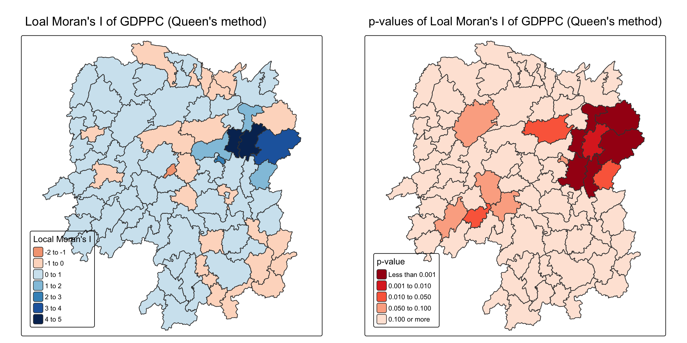
10.4.4 Preparing and Visualising LISA Map
Purpose of LISA visualization:
Identify significant spatial patterns in the data.
Highlight:
Hot spots: high values clustered together.
Cold spots: low values clustered together.
Spatial outliers: locations with values that strongly differ from their neighbours.
Common methods:
Choropleth maps → show LISA values by region.
Moran scatterplots → visualize local spatial autocorrelation at the individual location level.
Hot spot analysis maps → highlight statistically significant hot and cold spots.
LISA Cluster Map:
Shows locations color-coded by type of local autocorrelation (e.g., high-high, low-low, high-low, low-high).
Step 1: Generate the Moran scatterplot as the foundation before creating the cluster map.
10.4.4.1 Plotting Moran scatterplot
Definition:
A Moran scatterplot shows the relationship between:X-axis: standardized values of the variable.
Y-axis: spatial lag (average of neighbouring values).
Purpose:
Visualize local spatial autocorrelation.
The slope of the regression line = Moran’s I.
Interpretation (4 quadrants):
High-High (top right): Hot spots → high values surrounded by high values.
Low-Low (bottom left): Cold spots → low values surrounded by low values.
High-Low (bottom right): Spatial outlier → high value surrounded by low values.
Low-High (top left): Spatial outlier → low value surrounded by high values.
lisa <- lisa %>%
mutate(lag_GDPPC = st_lag(
GDPPC, nb, wt),
.before = 1) %>%
unnest(lag_GDPPC)Then, the code chunk below is used to plot the Moran Scatterplot of GDPPC against its spatial lag version as shown in the code cunk below.
ggplot(data = lisa,
aes(x = GDPPC,
y = lag_GDPPC)) +
geom_point() +
geom_smooth(method = "lm",
se = FALSE,
color = "red") +
labs(x = "GDPPC",
y = "Spatial Lag of GDPPC",
title = "Moran Scatterplot") +
theme_minimal()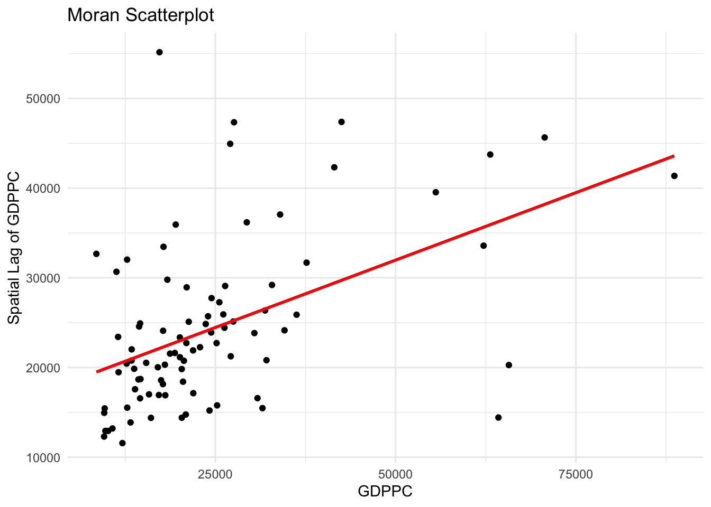
The Moran Scatterplot above is not very intuitive. To support effective visual communication, the code chunk below is used.
ggplot(data = lisa,
aes(x = GDPPC,
y = lag_GDPPC,
color = mean)) +
geom_point(size = 2) +
geom_smooth(method = "lm",
se = FALSE,
color = "black") +
geom_hline(yintercept=mean(lisa$lag_GDPPC), lty=2) +
geom_vline(xintercept=mean(lisa$GDPPC), lty=2) +
scale_color_manual(
values = c("High-High" = "red",
"Low-Low" = "blue",
"Low-High" = "lightblue",
"High-Low" = "pink")) +
labs(x = "GDPPC",
y = "Spatial Lag of GDPPC",
title = "Moran Scatterplot with LISA Quadrants") +
theme_minimal()
Note
Notice that the plot is split in 4 quadrants. The top right corner belongs to areas that have high GDPPC and are surrounded by other areas that have the average level of GDPPC. This are the high-high locations in the lesson slide.
10.4.4.2 Plotting Moran scatterplot with standardised variable
First we will use scale() to centers and scales the variable. Here centering is done by subtracting the mean (omitting NAs) the corresponding columns, and scaling is done by dividing the (centered) variable by their standard deviations.
lisa <- lisa %>%
mutate(z_GDPPC = scale(GDPPC),
z_lag_GDPPC = scale(lag_GDPPC),
.before = 1)The as.vector() added to the end is to make sure that the data type we get out of this is a vector, that map neatly into out dataframe.
Now, we are ready to plot the Moran scatterplot again by using the code chunk below.
ggplot(data = lisa,
aes(x = z_GDPPC,
y = z_lag_GDPPC,
color = mean)) +
geom_point(size = 2) +
geom_smooth(method = "lm",
se = FALSE,
color = "black") +
geom_hline(yintercept=mean(lisa$z_lag_GDPPC), lty=2) +
geom_vline(xintercept=mean(lisa$z_GDPPC), lty=2) +
scale_color_manual(
values = c("High-High" = "red",
"Low-Low" = "blue",
"Low-High" = "lightblue",
"High-Low" = "pink")) +
labs(x = "Standardised GDPPC",
y = "Standardised Spatial Lag of GDPPC",
title = "Standardised Moran Scatterplot with LISA Quadrants") +
theme_minimal()
10.4.4.3 Preparing LISA map classes
The code chunks below show the steps to prepare a LISA cluster map.
Next, derives the spatially lagged variable of interest (i.e. GDPPC) and centers the spatially lagged variable around its mean.
This is follow by centering the local Moran’s around the mean.
Next, we will set a statistical significance level for the local Moran.
signif <- 0.0510.4.4.4 Plotting and visualising LISA map
By default, the LISA classes are stored in mean, median and pysal fields of lisa sf data frame. To prepare the LISA map, we will derive a new field called LISA-cluster from either one of these three field by using the code chunk below.
lisa <- lisa %>%
mutate(
LISA_cluster = ifelse(
p_ii < 0.05,
as.character(mean),
"Insignificant"),
LISA_cluster = factor(
LISA_cluster,
levels = c("Insignificant", "Low-Low", "Low-High", "High-Low", "High-High")
)
)
Note
Notice that a new class called Insignificant has been added for records whereby p_ii > 0.05.
Now, we can plot the LISA map by using the code chunk below.
lisa_map <- tm_shape(lisa) +
tm_polygons(
fill = "LISA_cluster",
fill.scale = tm_scale_categorical(
values = c(
"grey80", # Insignificant
"blue", # Low-Low
"lightblue", # Low-High
"pink", # High-Low
"red" # High-High
)
),
fill.legend = tm_legend(
title = "LISA Cluster",
position = tm_pos_in("left", "bottom"))
) +
tm_borders() +
tm_title("Local Moran's I Clusters (p < 0.05)")
lisa_map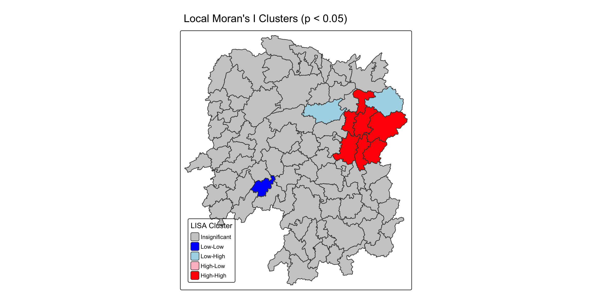
For effective interpretation, it is better to plot both the local Moran’s I values map and its corresponding p-values map next to each other.
The code chunk below will be used to create such visualisation.
We can also include the local Moran’s I map and p-value map as shown below for easy comparison.
ii.map <- tm_shape(lisa) +
tm_polygons(
fill = "ii",
fill.scale = tm_scale_intervals(
style = "pretty",
n = 5,
values = "brewer.RdBu"
),
fill.legend = tm_legend(
title = "Local Moran's I",
position = tm_pos_in("left", "bottom")
)
) +
tm_borders(fill_alpha = 0.5) +
tm_title("Local Moran's I of GDPPC (Queen's method)")
lisa_map <- tm_shape(lisa) +
tm_polygons(
fill = "LISA_cluster",
fill.scale = tm_scale_categorical(
values = c(
"grey80", # Insignificant
"blue", # Low-Low
"lightblue",# Low-High
"pink", # High-Low
"red" # High-High
)
),
fill.legend = tm_legend(
title = "LISA Cluster",
position = tm_pos_in("left", "bottom")
)
) +
tm_borders() +
tm_title("Local Moran's I Clusters (p < 0.05)")
tmap_arrange(ii.map, lisa_map, asp = 1, ncol = 2)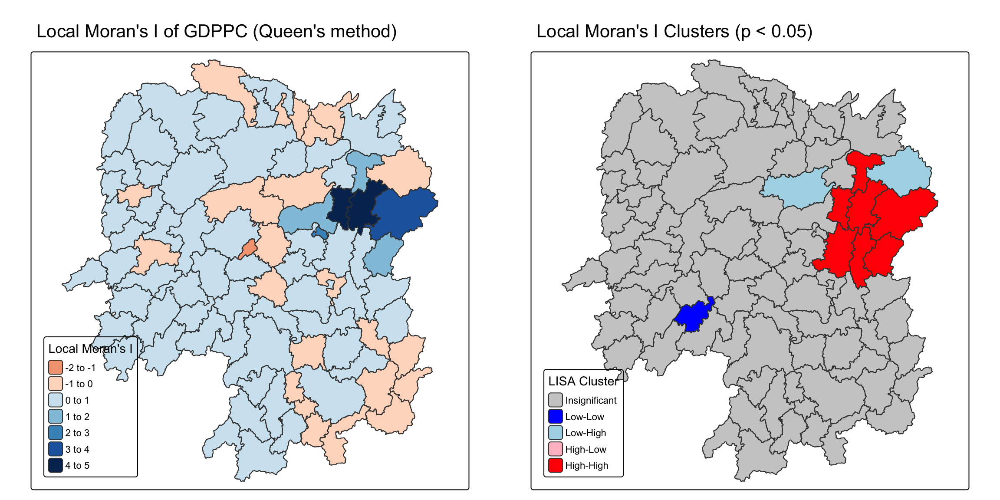
Note
Question: What statistical observations can you draw from the LISA map above?
Answer:
High–High clusters (hot spots): Found in the east–central part of Hunan Province, indicating counties with high GDP per capita surrounded by high-value neighbors.
Low–Low clusters (cold spots): Found in the south–western part, showing counties with low GDP per capita surrounded by other low-value neighbors.
Low–High outliers: A county in the northeast has low GDP per capita but is surrounded by high-value neighbors.
Insignificant areas: Most counties are grey, suggesting no significant local spatial autocorrelation.
Conclusion: The LISA map reveals clear hot spots and cold spots of GDP per capita in Hunan, along with some spatial outliers, confirming that development is not evenly distributed but clustered in specific regions.
10.5 Hot Spots and Cold Spots Analysis (HCSA)
Definition
Hot spots: Areas where high values cluster together (e.g., high GDP per capita counties surrounded by other high values).
Cold spots: Areas where low values cluster together (e.g., low GDP per capita counties surrounded by other low values).
Used to detect whether spatial clusters are statistically significant or could have occurred by chance.
Purpose
Visualize and understand spatial patterns of concentration.
Identify regions of prosperity (hot spots) and underdevelopment (cold spots).
Statistical method
Commonly uses Getis-Ord Gi* statistic.
Determines whether observed clustering is significant.
Analysis workflow (4 steps)
Derive spatial weight matrix (define neighbors).
Compute Gi* statistics.
Map Gi* results (hot spots vs cold spots).
Communicate results (interpret clusters in policy or planning context).
10.5.1 Deriving distance weight matrix
Whist the spatial autocorrelation considered units which shared borders, for Getis-Ord Gi* statistics, we are defining neighbours based on distance.
There are two type of distance-based proximity matrix, they are:
fixed distance weight matrix,
adaptive distance weight matrix, and
inverse distance weights.
10.5.1.1 Computing fixed distance weights
In this section, you will learn how to compute fixed distance weight matrix by using st_dist_band() and st_weights() of sfdep package.
Firstly, we need to determine the upper limit for distance band by using the steps below:
ct <- critical_threshold(st_geometry(hunan))
ct[1] 60799.91The summary report shows that the largest first nearest neighbour distance is 60.80 km, so using this as the upper threshold gives certainty that all units will have at least one neighbour.
Using the critical threshold value computed above, code chunk below is used to compute the fixed distance weight.
hunan_fdw <- hunan %>%
mutate(nb = include_self(
st_dist_band(
st_geometry(geometry),
upper = ct)),
wt = st_weights(nb,
style = "W"),
.before = 1)
Note
Noted that for Gi* include_self() must be used to endure that  .
.
10.5.1.2 Computing adaptive distance weights
Problem with fixed distance weights
In fixed distance weight matrices:
Urban areas (densely settled) → many neighbours within the fixed distance.
Rural areas (sparsely settled) → few or no neighbours within the same distance.
Result: neighbour relationships can become uneven and biased (too smooth in cities, too weak in rural regions).
Solution: Adaptive distance weights
Use k-nearest neighbours (k-NN) instead of a fixed distance threshold.
This approach ensures that each location has exactly k neighbours, regardless of density.
Options:
Accept asymmetric neighbours (A is neighbour of B, but B not necessarily of A).
Or enforce symmetry (if A is neighbour of B, then B is also neighbour of A).
In this section, you will learn how to compute fixed distance weight matrix by using st_dist_band() and st_weights() of sfdep package.
hunan_adw <- hunan %>%
mutate(nb = include_self(
st_knn(
st_geometry(geometry),
k = 6)),
wt = st_weights(
nb, style = "W"),
.before = 1)10.5.1.3 Computing adaptive distance weights
10.5.2 Computing local Gi*
Local Gi* (pronounced “G-i-star”) is a Getis-Ord statistic used in spatial analysis to identify statistically significant hot spots and cold spots of high or low attribute values within a dataset. It measures the spatial clustering of values by comparing the total value within a specified neighborhood to the global total, producing a Z-score and p-value for each location to determine the likelihood that the observed pattern is not due to random chance.
In this sub-section, you will gain hands-on experience on performing Gi* analysis by using local_gstar_perm() of sfdep package.
HCSA_fdw <- hunan_fdw %>%
mutate(
gistar = local_gstar_perm(
GDPPC, nb, wt, nsim = 99),
.before = 1) %>%
unnest(gistar)10.5.3 Preparing and Visualising HCSA Map
10.5.3.1 Mapping Gi* with fix distance weights
In the code chunk below, thematic mapping functions of tmaps are used to prepare a choropleth map showing the distribution of Gi* values.
tm_shape(HCSA_fdw) +
tm_polygons(fill = "gi_star",
fill.scale = tm_scale_intervals(
style = "pretty",
n = 6,
values = "brewer.rd_bu"),
fill.legend = tm_legend(
title = "Gi*",
position = tm_pos_out())) +
tm_borders(fill_alpha = 0.5) +
tm_title("Gi* of GDPPC (Fixed Bandwidth d = 60799.91m)")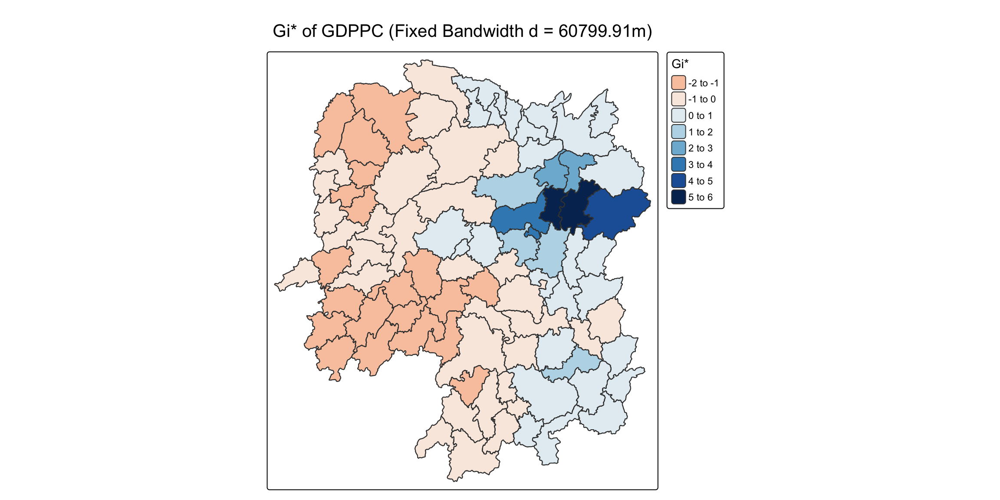
10.5.3.2 Mapping local Gi* p-values
The choropleth shows there is evidence for both positive and negative Ii values. However, it is useful to consider the p-values for each of these values, as consider above.
The code chunk below plots a choropleth map of p-values of Gi* by using functions of tmap package.
tm_shape(HCSA_fdw) +
tm_polygons(fill = "p_sim",
fill.scale = tm_scale_intervals(
breaks = c(-Inf, 0.001, 0.01, 0.05, 0.1, Inf),
values = "-brewer.Reds"),
fill.legend = tm_legend(
title = "simulated p-value",
position = tm_pos_out())) +
tm_borders(fill_alpha = 0.5) +
tm_title("p-values of local Gi* of GDPPC (Fixed distance)")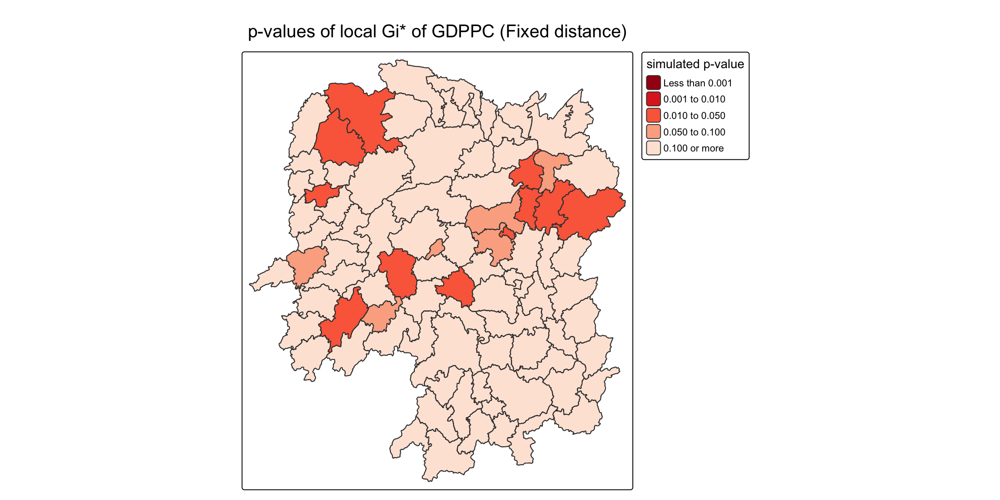
10.5.3.3 Mapping both Gi* values and p-values
For effective interpretation, it is better to plot both the Gi* values map and its corresponding p-values map next to each other.
The code chunk below will be used to create such visualisation.
Gi_star_map <- tm_shape(HCSA_fdw) +
tm_polygons(fill = "gi_star",
fill.scale = tm_scale_intervals(
style = "pretty",
n = 5,
values = "-brewer.rd_bu"),
fill.legend = tm_legend(
title = "local Gi*",
position = tm_pos_in(
"left", "bottom"))) +
tm_borders(fill_alpha = 0.5) +
tm_title("Local Gi* of GDPPC")
p_values_map <- tm_shape(HCSA_fdw) +
tm_polygons(fill = "p_sim",
fill.scale = tm_scale_intervals(
breaks = c(0, 0.001, 0.01, 0.05, 0.1, 1),
values = "-brewer.reds"),
fill.legend = tm_legend(
title = "p-value",
position = tm_pos_in("left", "bottom")
)) +
tm_borders(fill_alpha = 0.5) +
tm_title("p-values of local Gi* of GDPPC (fixed distance)")
tmap_arrange(Gi_star_map, p_values_map, asp=1, ncol=2)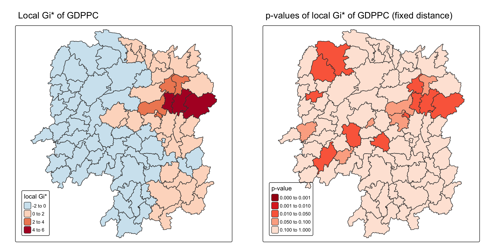
10.5.3.4 Plotting and visualising HCSA Map
By default, the HCSA classes are stored in cluster field of HCSA_fdw sf data frame. To prepare the HSCA map, we will derive a new field called HCSA_cluster from cluster field by using the code chunk below.
HCSA_fdw <- HCSA_fdw %>%
mutate(HCSA_cluster = case_when(
p_sim > 0.05 ~ "Insignificant",
p_sim <= 0.05 & cluster == "High" ~ "Hot spot",
p_sim <= 0.05 & cluster == "Low" ~ "Cold spot",
TRUE ~ "Other"),
HCSA_cluster = factor(
HCSA_cluster,
levels = c("Insignificant", "Hot spot", "Cold spot")
),
.before = 1
)
Note
Notice that a new class called Insignificant has been added for records whereby p_sim > 0.05.
Now, we can plot the HCSA map by using the code chunk below.
HCSA_map <- tm_shape(HCSA_fdw) +
tm_polygons(
fill = "HCSA_cluster",
fill.scale = tm_scale_categorical(
values = c(
"grey80", # Insignificant
"red", # Low-Low
"blue" # High-High
)
),
fill.legend = tm_legend(
title = "HSCA Cluster",
position = tm_pos_in("left", "bottom"))
) +
tm_borders() +
tm_title("HCSA Clusters (p < 0.05)")
HCSA_map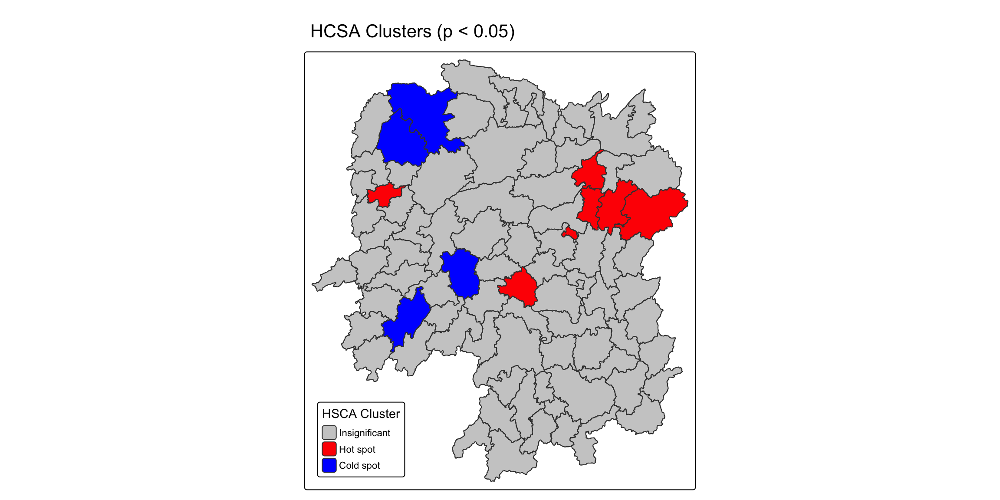
For effective interpretation, it is better to plot both the local Gi* values map and its corresponding HCSA map next to each other.
The code chunk below will be used to create such visualisation.
tmap_arrange(Gi_star_map, HCSA_map, asp=1, ncol=2)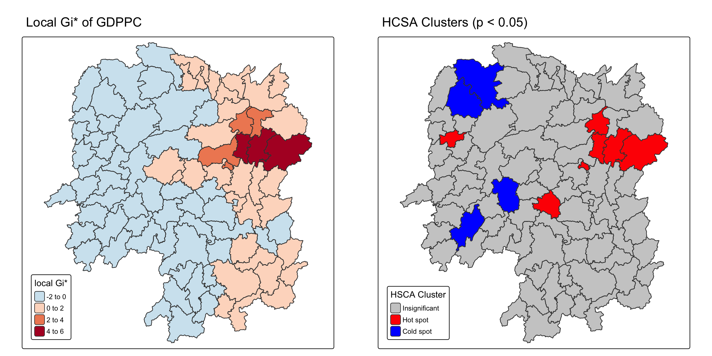
Note
Question: What statistical observations can you draw from the LISA map above?
Hot spots (red): Concentrated in the east–central region, indicating clusters of high GDP per capita surrounded by other high values.
Cold spots (blue): Found in the south-west and north-west regions, where counties with low GDP per capita are clustered together.
Insignificant areas (grey): The majority of counties show no statistically significant clustering, meaning spatial clustering of GDP per capita is concentrated in specific regions only.
Conclusion: GDP per capita in Hunan Province is not randomly distributed; instead, it shows significant hot spots in the east–central region and cold spots in the south-west and north-west, highlighting spatial inequality in economic development.